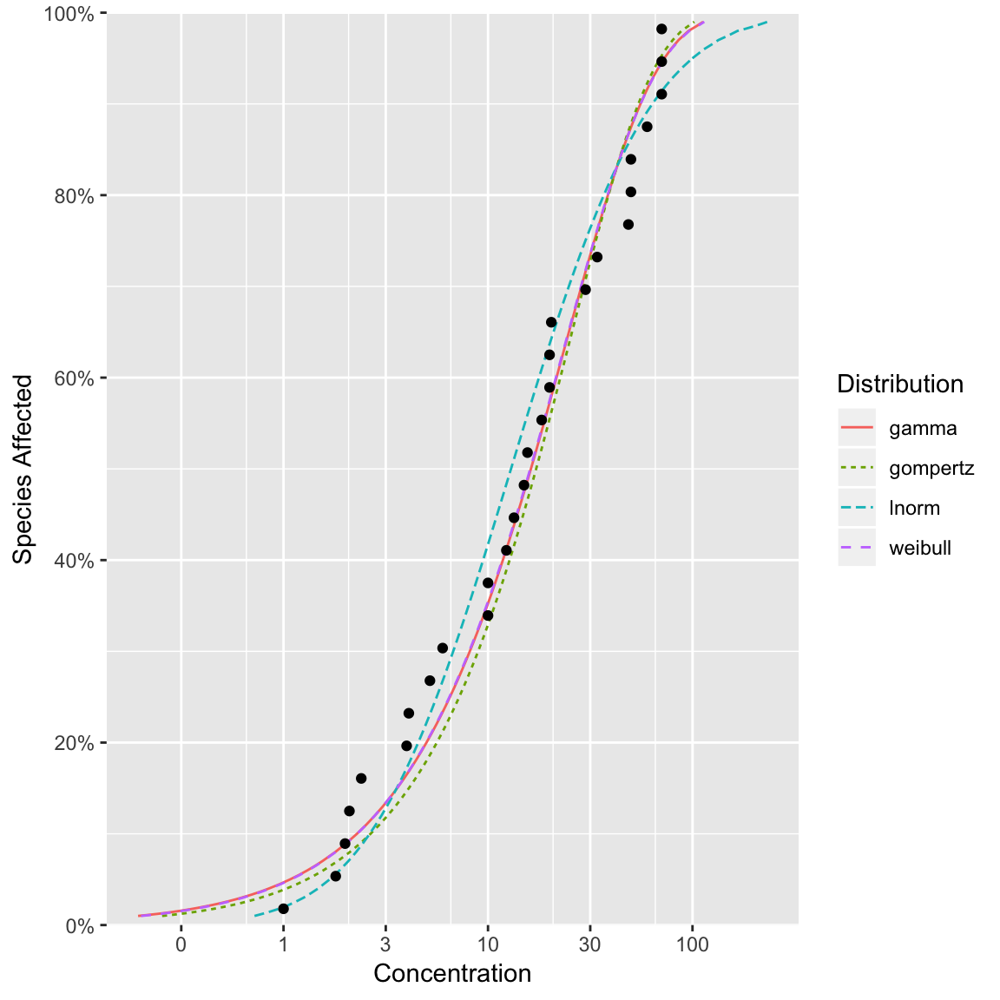
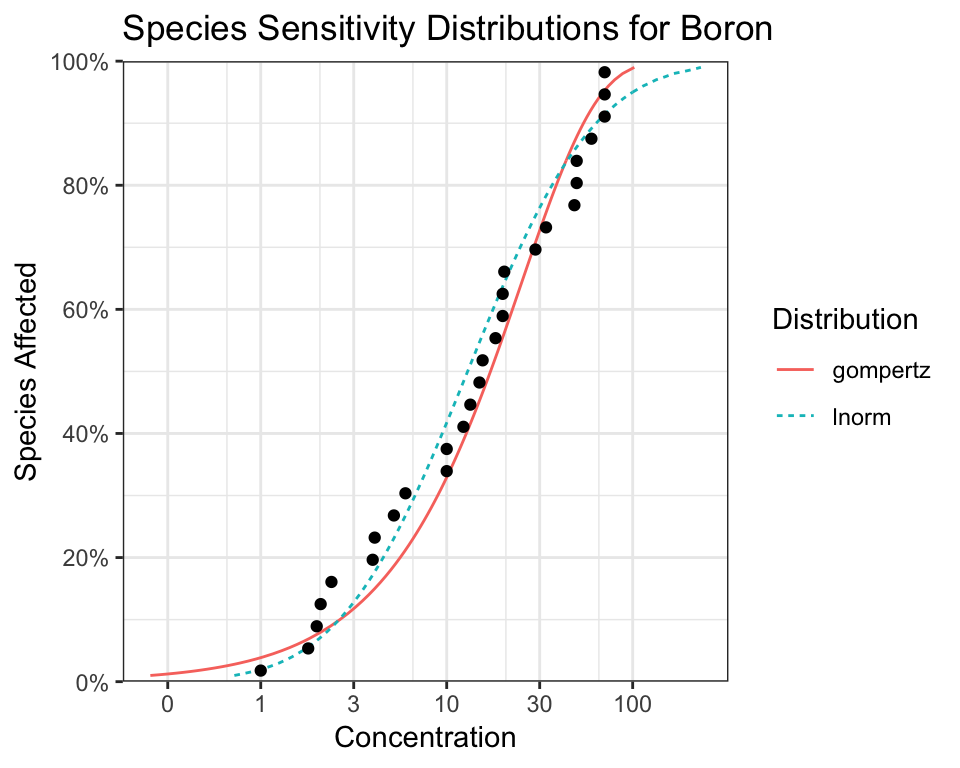

ssdtools User Manual
Joe Thorley
2018-11-14
Source:vignettes/ssdtools-manual.Rmd
ssdtools-manual.RmdBackground
ssdtools is an R package to fit Species Sensitivity Distributions (SSDs) using Maximum Likelihood and model averaging.
SSDs are cumulative probability distributions that are used to estimate the proportion of a range of species that are affected by a given concentration of a chemical. The concentration that affects 5% of the species is referred to as the 5% Hazard Concentration (HC). For more information on SSDs the reader is referred to Posthuma, Suter II, and Traas (2001).
In order to use ssdtools you need to install R (see below) or use the Shiny app. The shiny app includes a user guide. This vignette is a user manual for the R package.
Installation
In order to install R (R Core Team 2018) the appropriate binary for the users operating system should be downloaded from CRAN and then installed.
Once R is installed, the ssdtools package can be installed by executing the following code at the R console
The ssdtools package can then be loaded into the current session using
library(ssdtools)
#> Loading required package: ggplot2
#> Loading required package: fitdistrplus
#> Loading required package: MASS
#> Loading required package: survival
#> Loading required package: npsurv
#> Loading required package: lseiThe ssdtool package loads several other R packages including ggplot2 (Wickham 2016) for plotting and fitdistrplus (Delignette-Muller and Dutang 2015) for model fitting.
Getting Help
To get additional information on a particular function just type ? followed by the name of the function at the R console. For example ?ssd_gof brings up the R documentation for the ssdtools goodness of fit function.
Input Data
Once the ssdtools package has been loaded the next task is to input some data. An easy way to do this is to save the concentration data for a single chemical as a column called Conc in a comma separated file (.csv). Each row should be the sensitivity concentration for a separate species. If species and/or group information is available then this can be saved as Species and Group columns. The .csv file can then be read into R using
For the purposes of this manual we use the CCME dataset for boron which is provided with the ssdtools package
data <- ssdtools::boron_data
print(data)
#> # A tibble: 28 x 5
#> Chemical Species Conc Group Units
#> <chr> <chr> <dbl> <fct> <chr>
#> 1 Boron Oncorhynchus mykiss 2.1 Fish mg/L
#> 2 Boron Ictalurus punctatus 2.4 Fish mg/L
#> 3 Boron Micropterus salmoides 4.1 Fish mg/L
#> 4 Boron Brachydanio rerio 10 Fish mg/L
#> 5 Boron Carassius auratus 15.6 Fish mg/L
#> 6 Boron Pimephales promelas 18.3 Fish mg/L
#> 7 Boron Daphnia magna 6 Invertebrate mg/L
#> 8 Boron Opercularia bimarginata 10 Invertebrate mg/L
#> 9 Boron Ceriodaphnia dubia 13.4 Invertebrate mg/L
#> 10 Boron Entosiphon sulcatum 15 Invertebrate mg/L
#> # ... with 18 more rowsFit Distributions
With the data loaded the user can use the ssd_fit_dists() function to fit one or more distributions. By default ssd_fit_dists() fits the log-normal (lnorm), log-logistic (llog), log-Gumbel (lgumbel), Gompertz (gompertz), gamma (gamma) and Weibull (weibull) distributions. The user can change specify a subset using the dists argument.
The fits can be plotted using autoplot.

Vignettes are long form documentation commonly included in packages. Because they are part of the distribution of the package, they need to be as compact as possible. The html_vignette output type provides a custom style sheet (and tweaks some options) to ensure that the resulting html is as small as possible. The html_vignette format:
- Never uses retina figures
- Has a smaller default figure size
- Uses a custom CSS stylesheet instead of the default Twitter Bootstrap style
Vignette Info
Note the various macros within the vignette section of the metadata block above. These are required in order to instruct R how to build the vignette. Note that you should change the title field and the \VignetteIndexEntry to match the title of your vignette.
Styles
The html_vignette template includes a basic CSS theme. To override this theme you can specify your own CSS in the document metadata as follows:
output:
rmarkdown::html_vignette:
css: mystyles.cssFigures
The figure sizes have been customised so that you can easily put two images side-by-side.

You can enable figure captions by fig_caption: yes in YAML:
output:
rmarkdown::html_vignette:
fig_caption: yesThen you can use the chunk option fig.cap = "Your figure caption." in knitr.
More Examples
You can write math expressions, e.g. \(Y = X\beta + \epsilon\), footnotes1, and tables, e.g. using knitr::kable().
| mpg | cyl | disp | hp | drat | wt | qsec | vs | am | gear | carb | |
|---|---|---|---|---|---|---|---|---|---|---|---|
| Mazda RX4 | 21.0 | 6 | 160.0 | 110 | 3.90 | 2.620 | 16.46 | 0 | 1 | 4 | 4 |
| Mazda RX4 Wag | 21.0 | 6 | 160.0 | 110 | 3.90 | 2.875 | 17.02 | 0 | 1 | 4 | 4 |
| Datsun 710 | 22.8 | 4 | 108.0 | 93 | 3.85 | 2.320 | 18.61 | 1 | 1 | 4 | 1 |
| Hornet 4 Drive | 21.4 | 6 | 258.0 | 110 | 3.08 | 3.215 | 19.44 | 1 | 0 | 3 | 1 |
| Hornet Sportabout | 18.7 | 8 | 360.0 | 175 | 3.15 | 3.440 | 17.02 | 0 | 0 | 3 | 2 |
| Valiant | 18.1 | 6 | 225.0 | 105 | 2.76 | 3.460 | 20.22 | 1 | 0 | 3 | 1 |
| Duster 360 | 14.3 | 8 | 360.0 | 245 | 3.21 | 3.570 | 15.84 | 0 | 0 | 3 | 4 |
| Merc 240D | 24.4 | 4 | 146.7 | 62 | 3.69 | 3.190 | 20.00 | 1 | 0 | 4 | 2 |
| Merc 230 | 22.8 | 4 | 140.8 | 95 | 3.92 | 3.150 | 22.90 | 1 | 0 | 4 | 2 |
| Merc 280 | 19.2 | 6 | 167.6 | 123 | 3.92 | 3.440 | 18.30 | 1 | 0 | 4 | 4 |
Also a quote using >:
“He who gives up [code] safety for [code] speed deserves neither.” (via)
References
Delignette-Muller, Marie Laure, and Christophe Dutang. 2015. “fitdistrplus: An R Package for Fitting Distributions.” Journal of Statistical Software 64 (4): 1–34. http://www.jstatsoft.org/v64/i04/.
Posthuma, Leo, Suter IIGlenn W, and Theo P Traas. 2001. Species Sensitivity Distributions in Ecotoxicology. CRC press. https://www.crcpress.com/Species-Sensitivity-Distributions-in-Ecotoxicology/Posthuma-II-Traas/p/book/9781566705783.
R Core Team. 2018. R: A Language and Environment for Statistical Computing. Vienna, Austria: R Foundation for Statistical Computing. https://www.R-project.org/.
Wickham, Hadley. 2016. Ggplot2: Elegant Graphics for Data Analysis. Springer-Verlag New York. http://ggplot2.org.
A footnote here.↩